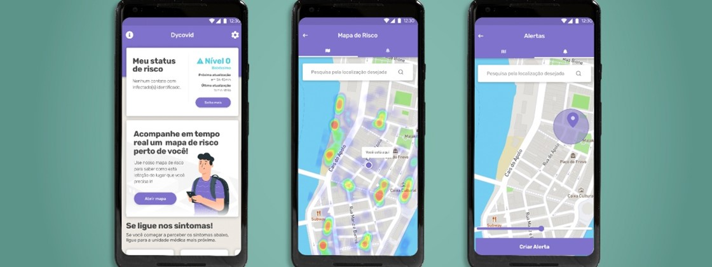
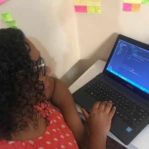
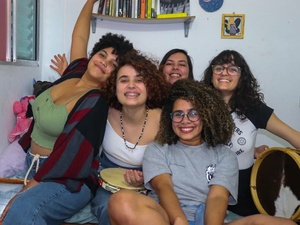

Você já parou para pensar como as tecnologias do audiovisual podem impactar a vida e o imaginário dos moradores das periferias? Equipamentos, softwares e cursos de produção audiovisual formam um conjunto de técnicas e saberes que poucos brasileiros têm acesso no mundo digital.
App usa recursos do celular para prever contágio por Covid-19
A startup MAMBA Labs desenvolveu o aplicativo Dycovid, para smartphones, que usa os recursos do aparelho para determinar se o usuário teve contato com pessoas infectadas pelo novo coronavírus, alertando-os sobre um possível contágio.
Escola usa linguagem da quebrada para nsinar programação a jovens.
A partir da vivência dos jovens das periferias e favelas de São Paulo, escola pensada por moradores da quebrada pretende ensinar programação de maneira humanizada e não tecnicista.
Vozes da quebrada: podcasts viram canal para aproximar mulheres nos bairros
Comunicadoras que atuam nos distritos de Parelheiros e Capão Redondo, em São Paulo, estão apostando no podcast como ferramenta mais acessível e democrática para criar um diálogo mais próximo e afetivo com moradoras das quebradas de São Paulo.